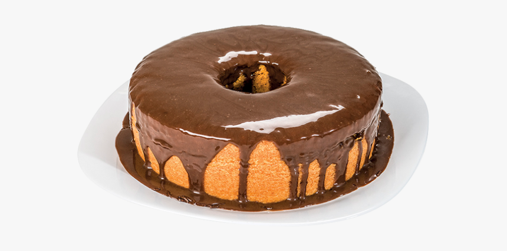

Bolo de Cenoura com Cobertura de Chocolate

Para fazer seu bolo de cenoura de liquidificador de uma vez só é preciso um liquidificador potente, mas se achar a massa pesada para o seu aparelho, corte a cenoura em pedaços bem pequenos e só bata no aparelho os ingredientes úmidos. Depois que estiver tudo homogêneo, incorpore a mistura líquida aos ingredientes secos, mexendo bem e delicadamente. Além de poupar o seu liquidificador, misturar os ingredientes secos delicadamente com a mão também é o segredo para o seu bolo de cenoura não solar.
Ingredientes da Massa
- 1/2 xícara (chá) de óleo
- 3 cenouras médias raladas
- 4 ovos
- 2 xícaras (chá) de açúcar
- 2 e 1/2 xícaras (chá) de farinha de trigo
- 1 colher (sopa) de fermento em pó
Ingredientes da Cobertura
- 1 colher (sopa) de manteiga
- 3 colheres (sopa) de chocolate em pó
- 1 xícara (chá) de açúcar
- 1 xícara (chá) de leite
Modo de Preparo da Massa
- Em um liquidificador, adicione a cenoura, os ovos e o óleo, depois misture.
- Acrescente o açúcar e bata novamente por 5 minutos.
- Em uma tigela ou na batedeira, adicione a farinha de trigo e depois misture novamente.
- Acrescente o fermento e misture lentamente com uma colher.
- Asse em um forno preaquecido a 180° C por aproximadamente 40 minutos.
Preparo da Cobertura
- Despeje em uma tigela a manteiga, o chocolate em pó, o açúcar e o leite, depois misture.
- Leve a mistura ao fogo e continue misturando até obter uma consistência cremosa
- depois despeje a calda por cima do bolo.
,
Clique aqui para ver mais receitas...